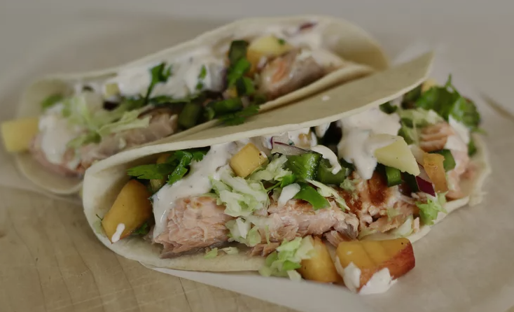

Salmon Tacos with Mango Salsa

Delicious Salmon Tacos with Mango Salsa
Nice light snack that is quick and easy to prepare.
Mango Salsa Ingredients:
- 3 mangoes, diced
- 2 peaches, diced
- 3 poblano peppers, seeded and diced
- 1/2 red onion, diced. Or more if desired.
- 1/2 lime, juiced, or more if desired
- 1 bunch cilantro, chopped, divided
Special Sauce Ingredients:
- 1(8 ounce) container sour cream
- 3 tablespoons mayonnaise
- 1 tablespoon ketchup
- 1/4 teaspoon ground cayenne pepper
- salt and ground pepper to taste
Remaining Ingredients:
- 24 (6 inch) corn tortillas
- cooking spray
- 2 pounds fresh salmon
- 1 small head of cabbage, shredded
- 3 avocados, sliced
- 2 limes, cut into wedges
Directions
- Combine mangoes, peaches, poblano peppers, red onion, juice of 1/2 a lime and half the cilantro in a large bowl to make mango salsa. Cover with plastic wrap and refridgerate at least 1 hour (preferably overnight).
- Mix sour cream, mayonnaise, ketchup, cayenne pepper, salt and black pepper in a small bowl to make special sauce.
- Preheat a grill pan over medium-high heat; coat with cooking spray. Cook salmon until easily flaked with a fork (about 4 minutes per side). Transfer to a plate and flake into small pieces with fork.
- Heat tortillas in the preheated oven until warmed through (about 5 minutes).
- Divide salmon amoung tortillas. Top with mango salsa, special sauce, shredded cabbage, avocados and remaining cilantro. Wrap up tacos and serve lime wedges alongside them.